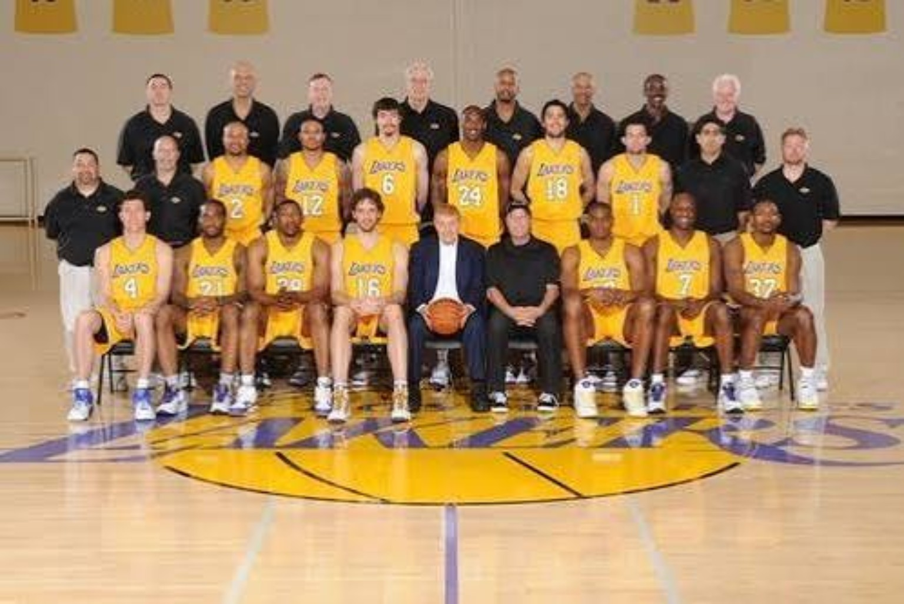
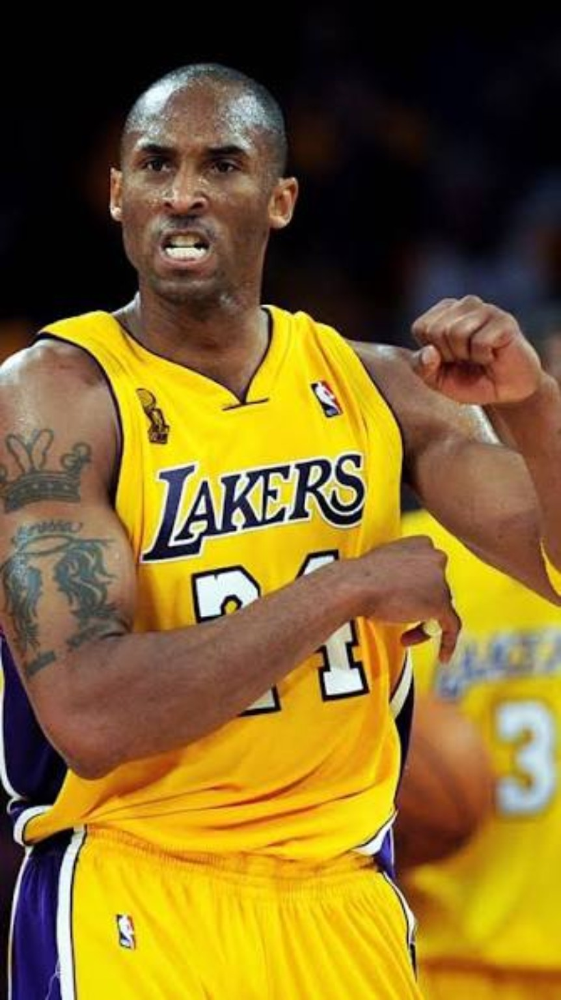
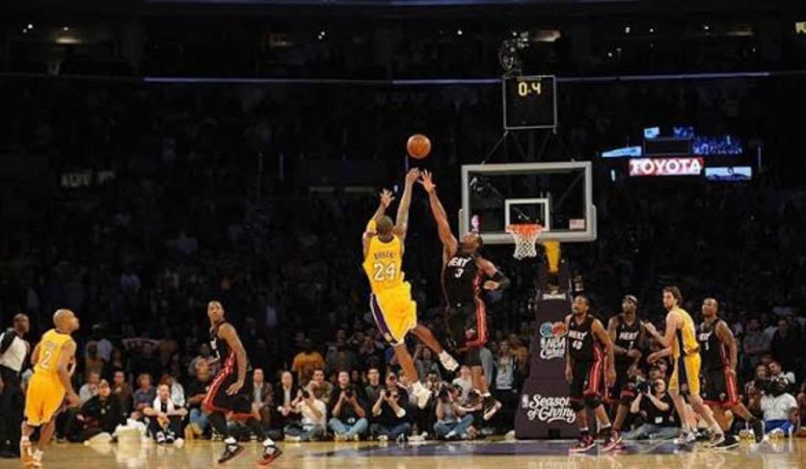
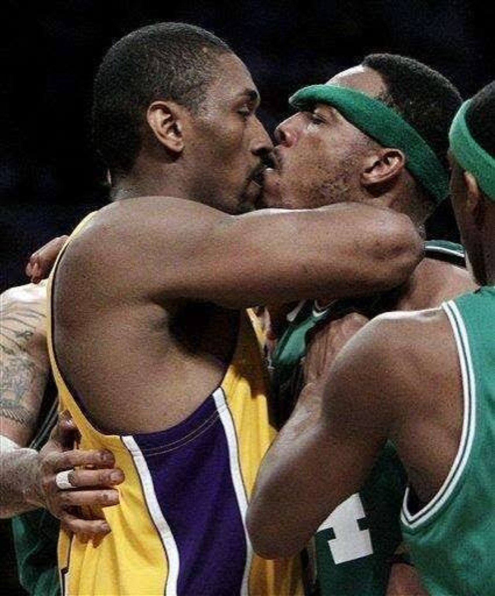
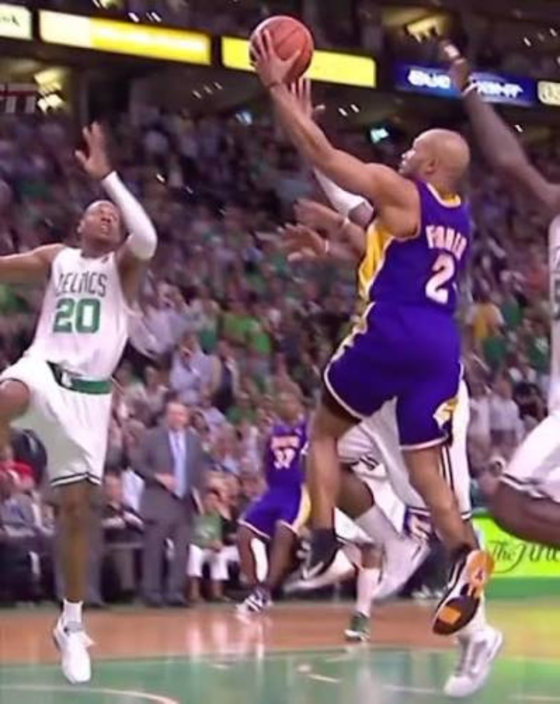
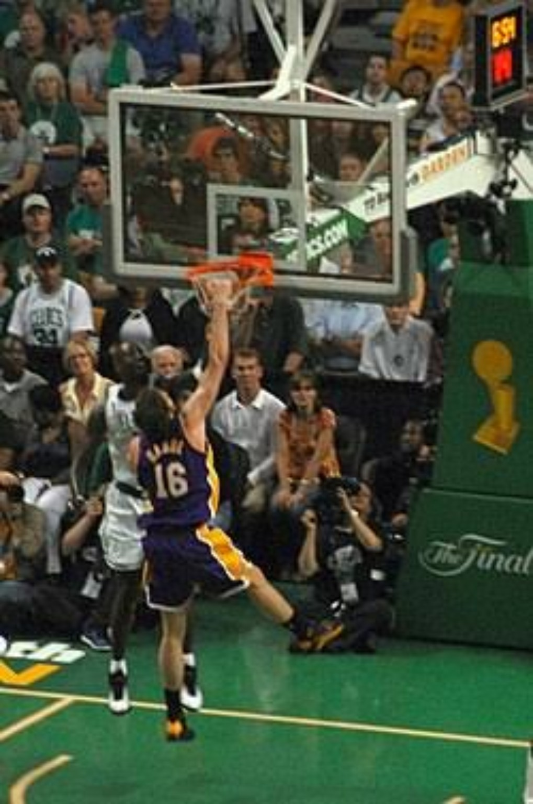
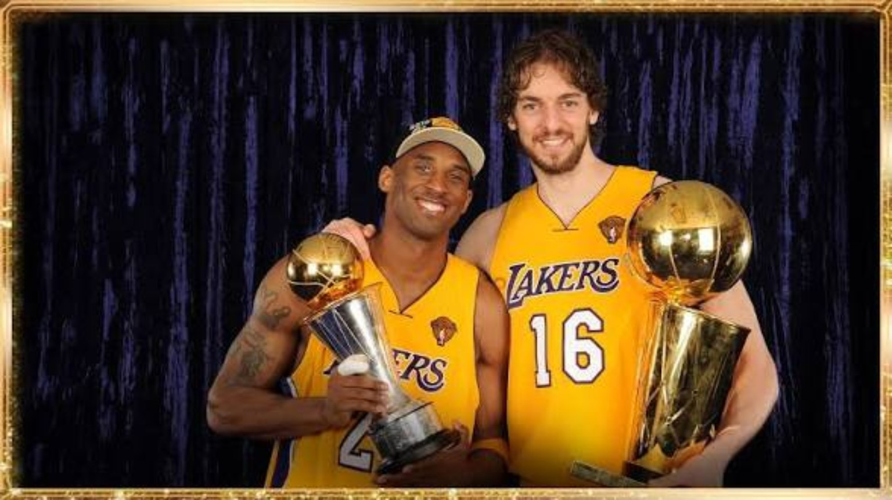
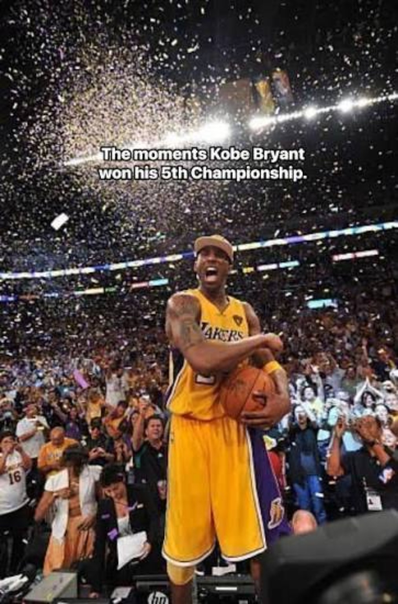

The athleticism was fading from its absolute peak. The command was not.
01. THE CHAMPIONS CAME BACK DIFFERENT.
Losing Trevor Ariza hurt, but Los Angeles replaced his youth and explosiveness with an established veteran in Ron Artest: stronger, more physical and capable of taking the nastiest perimeter assignment. Pau Gasol delivered another excellent season at 18.3 points and 11.3 rebounds. Andrew Bynum played 65 games and continued to improve at 15.0 and 8.3. Lamar Odom nearly averaged a double-double at 10.8 and 9.8, mostly as the do-everything sixth man. Shannon Brown and Jordan Farmar remained important bench pieces. The Lakers won 57 games and still earned the West's No. 1 seed in a conference where every playoff team won at least 50.

02. FULLY FORMED KOBE.
At 31, Kobe looked like a superstar conserving as much as possible for April, May and June. He still averaged 27.0 points, 5.4 rebounds and 5.0 assists. He still had the clutch moments. LeBron won the regular-season MVP, but our view at the time remained that Kobe was the best player in basketball — and the best closer in the game. His attack was changing: more midrange work, more footwork, more difficult shots created from balance and angles instead of pure explosion. The athleticism was no longer the foundation. The skill was.

03. WHEN THE GAME GOT SMALL, KOBE GOT BIG.
Against Miami, with the Lakers down two and the clock almost gone, Kobe drifted left with Dwyane Wade contesting and launched an off-balance, one-legged three that banked in at the horn. It was ridiculous even by Kobe standards. Sometimes the shot didn't have to look good. It only had to leave his hand.

04. THE 8-SEED THAT DIDN'T PLAY LIKE ONE.
Oklahoma City earned our respect over six games. Kevin Durant was already a scoring champion at 21. Russell Westbrook was becoming a matchup nightmare. James Harden and Serge Ibaka were only 20, and the young Thunder had already won 50 games. This was where Artest immediately justified why Los Angeles wanted him. His jumper came and went, but his defense stayed, helping hold Durant to 35 percent shooting for the series. OKC pushed LA to Game 6, where a last-second Pau Gasol tip-in gave the Lakers a 95–94 escape. Without it, the series was headed to Game 7.
05. UTAH WAS THE BRIDGE. PHOENIX WAS THE TEST.
The Lakers swept Utah. Phoenix was different. Steve Nash was still Steve Nash. Amar'e Stoudemire was in his prime, with Jason Richardson, Grant Hill, Channing Frye, Goran Dragić and Jared Dudley around them. In Game 5, Artest struggled badly before making the play that mattered most: Kobe's final attempt missed, Ron crashed in and put it back at the horn. Then Game 6 was all Kobe — difficult jumper after difficult jumper until even the reactions told the story. Ron saved Game 5. Kobe ended Game 6.
06. BOSTON WAS OLDER. RONDO WAS BETTER.
The Celtics were always going to be a problem. Their Big Three was older, but Boston had not simply aged since 2008. Rajon Rondo had developed into an All-Star-level lead guard and, in our view, had a legitimate argument as the Celtics' most influential player by 2010. Pierce could still score. Ray Allen could still change a game with his shooting. Kevin Garnett remained the emotional and defensive backbone. But Rondo now controlled games in a way the younger version of himself had not in 2008.

07. DOWN 3–2.
The Finals became the fight everybody expected. Los Angeles took Game 1. Boston answered. Derek Fisher authored another veteran moment in Game 3. The Celtics' depth helped swing Game 4, and Boston took Game 5 to send the Lakers home down 3–2. We believed LA could get Game 6. They did. But Game 7 was always going to be a battle.

08. GAME 7 WAS ABOUT SURVIVING.
Kobe did not shoot well: 6-for-24. But he grabbed 15 rebounds, kept attacking and stayed engaged in an ugly game where almost nobody could find clean offense. More importantly, this was Pau Gasol's huge Finals moment: 19 points, 18 rebounds, four assists and two blocks. After everything said about him following 2008, Pau met Boston's physicality in the biggest game of his career.

09. PAU'S MOMENT. RON'S SHOT. KOBE'S FIFTH.
Ron Artest gave LA 20 points in Game 7. With just over a minute left, Kobe found him beyond the arc. Artest buried the three that pushed the Lakers ahead by six. This was why the 2010 Lakers were a championship team: they could win the game Kobe couldn't simply shoot them through. Los Angeles survived 83–79.

10. FIVE CHANGED THE CONVERSATION.
Championship No. 4 answered whether Kobe could lead a champion without Shaq. Championship No. 5 changed where we believed Kobe belonged historically. Shaq finished with four championships. Kobe now had five, had gone back-to-back as the centerpiece, won consecutive Finals MVPs and avenged 2008 against Boston. For 4DK, that moved Kobe beyond the Shaq comparison and closer to the Michael Jordan conversation. Within Lakers history, our view was settled: Kobe Bryant was the greatest Laker.

11. ONE AWAY — BUT HOW MANY CHANCES WERE LEFT?
Five put Kobe one championship away from Jordan's six. At 31, another title did not feel impossible. But Kobe had enormous mileage, Fisher was 35, Artest and Odom were 30, Gasol was approaching 30, and the Lakers had played into June three straight seasons. The window was open. It just didn't feel like it would stay open forever.

NO. 5 HAD TO GO THROUGH BOSTON.
At his athletic peak, Kobe overwhelmed you. By 2010, he understood how to outlast you.
We thought six was possible. Maybe even more. But even then, there was a feeling that this might be the last season when everything was perfectly positioned.
None of that mattered on June 17, 2010.
Kobe Bryant was a five-time NBA champion.
And No. 5 had gone through Boston.